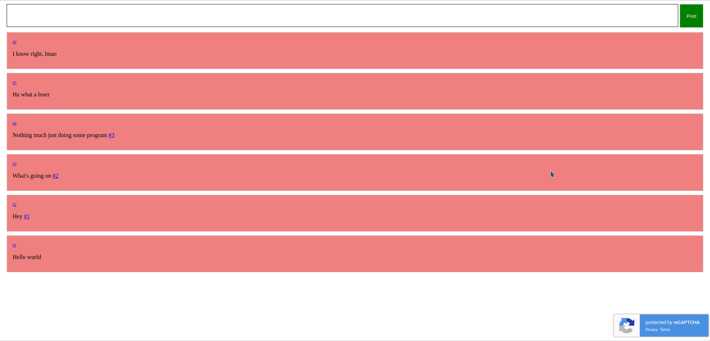
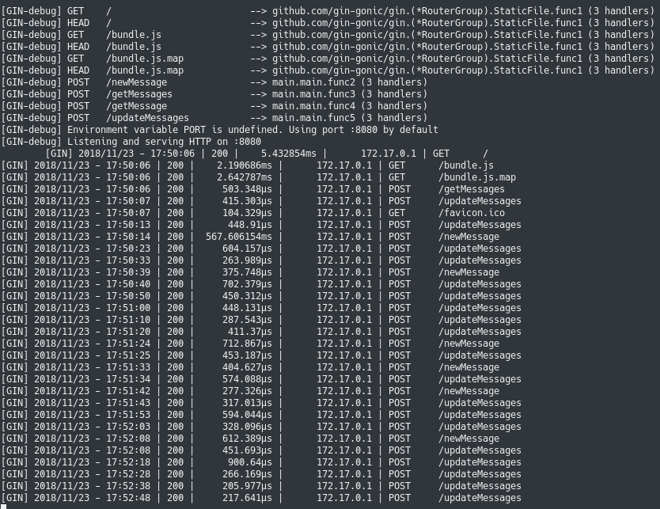

This thing is kinda like a message board thingy. You can post messages on the board and link other messages in your message. I mainly did it as an method to learn Golang, Docker, AWS EC2 and their relational databases. So it's nothing too crazy programming wise but it's pretty neat. Below you can see some screenshots. I used to have it running on a public ip but I needed the free EC2 instance for something else so down it went. You can get it up and running locally using the instructions on the github though. Check it out in the images below. You'll also notice that I added a recaptcha. There was very little to no reason to do this except I hate myself. But it's pretty cool, it's like an invisible recaptcha that triggers when you click the button. But since that recaptcha doesn't allow for multiple submissions per page I had to make a method for the server to cache the users. So that was a pain.
This project uses the library gin it's a super fast and pretty cool. Especially when you consider than unlike something like Node.js it's actually running on multiple threads. Ok that's not entirely true, the IO for Node.js does run on multiple threads... But still Golang is pretty cool. I mean look at these response times for the application, not even measured in milliseconds. That's including the SQLLite database hits. I mean to be fair it is docker so it's in RAM but still. 0.25-0.5ms for a request is pretty fucking fast.
Also I made it so you can link to other posts in a static manner, in the first image you can see that any text that matches the regex /#\d+/ and then links that to \post\{number}. This allows users to reference other posts and link to posts.